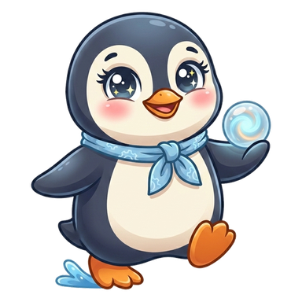
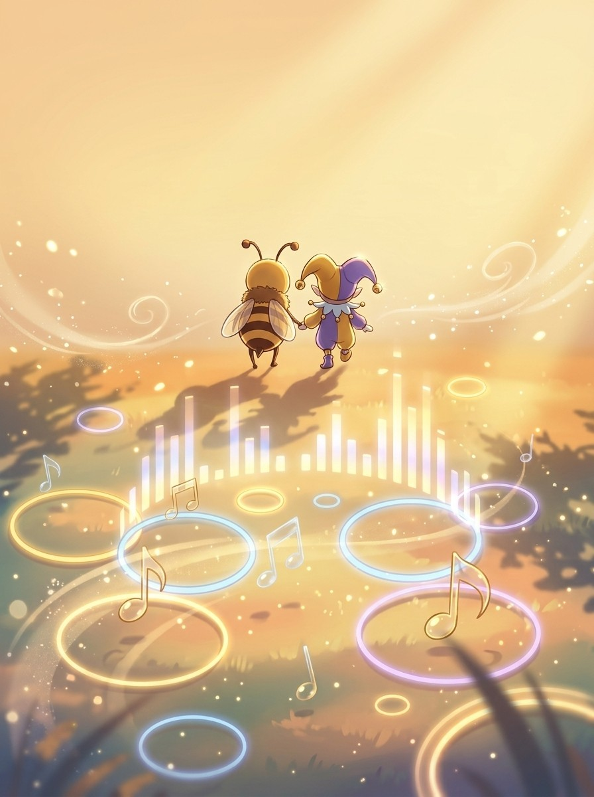
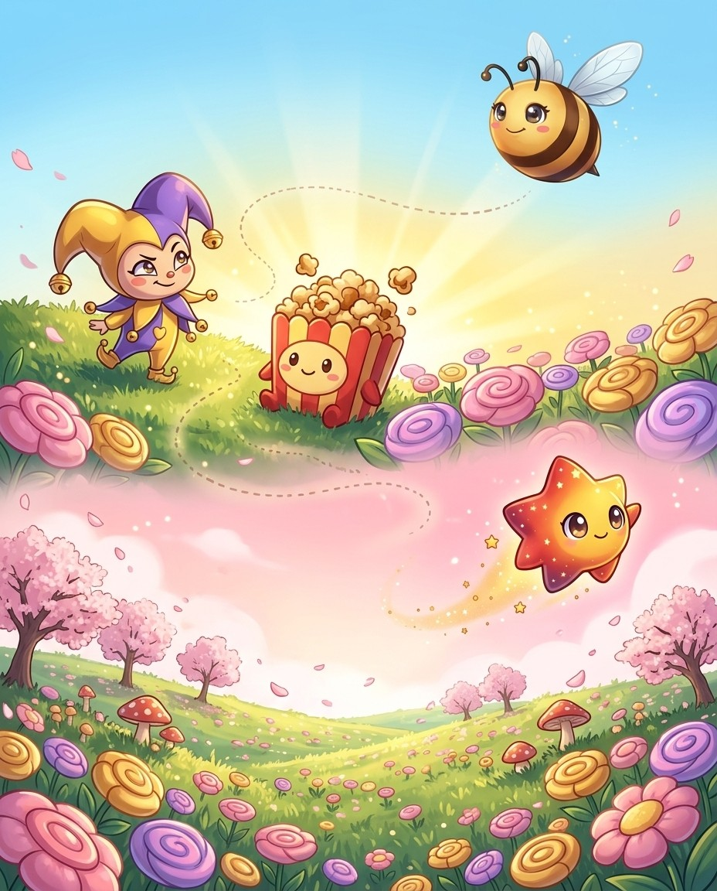

8 chapters141 practice wordsquizzes & puzzles throughout
Bizzy & Jester in the Vibe Some words have moods. The Vibe is where they let it show.
Word PersonalitiesHow this book works
Five moves. That's the whole system.
Jester here. Every word has a character. Meet them. — that's the route. The crew and I will keep it moving; you keep the pencil moving.
1
Read the story
Each chapter opens as a storyboard. Vex sets the trap; the crew talks you out of it.
2
Steal the pro move
The dark box is how a champion thinks on stage. It works on brand-new words too.
3
Spell out loud, then write
Say it, spell it aloud, write it. The order matters — it is how the stage will ask for it.
4
Pass the checkpoint
A short quiz straight from the Word Map. Circle your answers; the back of the book keeps the truth.
5
Play the puzzle, hunt the Big List
Every chapter ends in a game built from its own words, and the back holds every word in the book. Circle what you own.
🔊 Grown-ups: every chapter is narrated, and every word recorded, in the Bizzing Bee app
Bizzing Bee · Word Personalities1
Word PersonalitiesThe cast
Bizzy — and this book's guide, Jester
The crew of Vol. 10
Every book travels with a crew. These nine hand you puzzles, host the checkpoints and occasionally get a line right before you do.
Bizzy — The little bee who spells the world back together, one petal at a time. · Jester — The fool who’s cleverer than he looks.
Boba
OVR 65
Speller of Good Vibes
Sweet, chewy and full of surprises.
Center Star
OVR 50
Rookie of the Spotlight
Born for the spotlight, centre stage always.
Astro
OVR 66
Speller of the Cosmos
Mission commander of the Cosmos crew.
Luna
OVR 42
Rookie of the Cosmos
A gentle glow that guides night-time spellers home.
Popcorn
OVR 69
Champion of the Spotlight
No show is complete without a bucket of Popcorn.

Pengu
OVR 61
Speller of Good Vibes
Waddles on land, flies underwater.
Diva
OVR 74
Champion of the Spotlight
The star everyone came to hear.
GG
OVR 58
Rookie of Good Vibes
Good game, good vibes, good spelling.
And the other one
Vex the word-moth sneaks through every chapter, planting the exact mistakes real spellers make. Spot the trap before you step in it.
Bizzing Bee · Word Personalities2

WELCOME TO
The Vibe
Some words have moods. The Vibe is where they let it show.
Bizzing Bee · Word Personalities3
1Personality Themes · the VibeEgo & Self — ego / auto / alter
BizzyMeet the root ego, spelled E, G, O. It comes from Latin and…
UH-OH!
VexHere's a tricky pair. An egoist cares only about themselves. An egotist constantly…
GOT IT!
BobaNow the Greek side. Auto, spelled A, U, T, O, means self. An…
PopcornBuild ego up bigger. Ego plus the Greek mania, meaning madness, gives egomaniac,…
🔊 narrated in the appturn the page — the whole trick, explained →
4
Chapter 1 · Ego & Self — ego / auto / alterThe idea · ★★☆
The big idea
Words built on Latin ego = I and Greek autos = self describe how people relate to themselves. Master this cluster and you unlock personality vocabulary from egotist to autodidact.
The pro move
EGOTISTICAL
Say it. ee-guh-TIH-stih-kuhl
Spell it. E · G · O · T · I · S · T · I · C · A · L
Ego = Latin "I." An egoist cares only about themselves. An egotist constantly talks about themselves — the extra t stands for talking. Both from ego; only the suffix differs.
Scaling Up
An egocentric (ego + centrum = center) believes the universe revolves around them. An egomaniac (ego + Greek mania = madness) takes self-obsession to a pathological extreme.
Vex alert
An autoNOMous region makes its own NORMS — spell NOM then add -ous, not just -us.
Check yourself
Cover the page and spell egoist · egotist · egocentric out loud. Miss one? Read the idea again — it's faster than guessing twice.
Latin loqui = to speak and Greek phonē = sound/voice are two of the most productive roots in English. Together they explain dozens of words about how, how much, and how well people communicate.
Latin loqui = to speak. Loquacious = talks too freely. Eloquent = speaks beautifully (e- = out, so speaking out well). Grandiloquent = pompously grand speech. Ventriloquist (ventri = belly)…
Silence vs Talk Scale
Taciturn (Latin tacere = silent) = habitually quiet. Reticent = reluctant to speak. Laconic (from Sparta) = brief and to-the-point. Verbose (verbum = word) = uses too many words. Garrulous …
Vex alert
TACITURN: someone TACIT and STERN who never speaks turns away in silence
Check yourself
Cover the page and spell loquacious · eloquent · grandiloquent out loud. Miss one? Read the idea again — it's faster than guessing twice.
3Personality Themes · the Proving GroundHonesty & Deception — ver / mendax / cred / pseudo
BizzyMeet the root ver, spelled V, E, R. It comes from the Latin…
UH-OH!
VexCareful with a famous trap. Veracious, with an e, means truthful. But voracious,…
GOT IT!
AstroLast, the Greek pseudo means false, but here's the trap. It begins with…
DivaTake verdict. Ver means truth, plus dict, meaning say. A verdict is what…
🔊 narrated in the appturn the page — the whole trick, explained →
16
Chapter 3 · Honesty & Deception — ver / mendax / cred / p…The idea · ★★☆
The big idea
Latin veritas = truth and mendax = lying create perfectly opposite word families. Greek pseudos = false adds a third. These cover the full honesty spectrum and appear frequently in spelling bees.
The pro move
MENDACIOUS
Say it. m-eh-n-d-AY-sh-uh-s
Spell it. M · E · N · D · A · C · I · O · U · S
Say it again. m-eh-n-d-AY-sh-uh-s
Syllables. m · e · n · d · a · c · i · o · u · s
Sounds → Letters. [men=MEN] [DAY=DA] [shus=CIOUS]
The Truth Root — ver-
Latin veritas = truth. Veracious = truthful (≠ voracious = greedy!). Veracity = habitual truthfulness. Verify = prove true. Verdict (ver + dict = say) = what is truly stated. Aver = firmly …
The Lying Root — mendax
Mendacious = habitually untruthful. Mendacity = the habit of lying. Memory trick: a mendacious person mends (bends) the truth. This root is rare in English — which is exactly why it keeps a…
Vex alert
VERIFY starts with VERI — VERy Important to spell it with an E, not an A!
Check yourself
Cover the page and spell veracious · veracity · verify out loud. Miss one? Read the idea again — it's faster than guessing twice.
4Personality Themes · the Grey SeaFeelings & Emotions — the Four Humors
BizzyHere's a delightful old idea. Doctors once believed four body fluids shaped your…
UH-OH!
VexNow the hardest one. Phlegmatic, from the Greek phlegma, means so calm it…
GOT IT!
LunaSo four old fluids gave us sanguine, choleric, phlegmatic, and melancholy. Remember the…
GGBlood was thought to bring joy. Sanguine comes from the Latin sanguis, meaning…
🔊 narrated in the appturn the page — the whole trick, explained →
22
Chapter 4 · Feelings & Emotions — the Four HumorsThe idea · ★★☆
The big idea
Medieval medicine believed four bodily fluids controlled personality. This gave English four core emotion words still used today — each with an unusual spelling pattern that spelling bees love.
Blood → sanguine (optimistic). Yellow bile → choleric (quick-tempered). Phlegm → phlegmatic (calm, unemotional). Black bile → melancholy (deeply sad). From a 2,000-year-old medical theory —…
Sanguine & Choleric
Sanguine (SANG-gwin) from Latin sanguis = blood; the silent e at end. Choleric (KOL-er-ik) from Greek khole = bile; ch = /k/ (Greek signal). Blood brought joy; bile brought anger. Opposite …
Vex alert
MELANCHOLY: MELANcholy is not about a MELON — remember black (melan) + bile (choly)…
Check yourself
Cover the page and spell sanguine · choleric · phlegmatic out loud. Miss one? Read the idea again — it's faster than guessing twice.
Bizzing Bee · Word Personalities23
Chapter 4 · Feelings & Emotions — the Four HumorsPractice · ★★☆
Say it. Spell it out loud. Write it.
🔊 every word has real audio in the app
sanguine
/ SA-nggwihn / · /ˈsæŋɡwɪn/
a blood-red color
hook: SANGUINE is blood-red — the U-I-N-E at the end spells the color into …
Despite the team's difficult loss in the semifinals, the coach remained ▁▁▁ ab…
choleric
/ KAH-ler-ihk / · /ˈkɑlərɪk/
easily moved to anger; - H.G.Wells
hook: A CHOLERIC person is full of bile — ch + ol + eric, imagine an angry …
men of the ▁▁▁ type take to kicking and smashing
phlegmatic
/ f-l-eh-g-m-A-t-ih-k / · /flɛɡmˈætɪk/
is not easily excited to action
hook: PHLEGMATIC: the silent PH mirrors how phlegmatic people are — quiet a…
a ▁▁▁...and certainly undemonstrative man
melancholy
/ m-EH-l-uh-n-k-ah-l-ee / · /mˈɛlənkɑli/
is a gloomy state of mind
hook: MELANCHOLY: MELANcholy is not about a MELON — remember black (melan) …
growing more ▁▁▁ every hour
ebullient
/ ih-BUH-lyuhnt / · /ɪˈbʌljənt/
joyously unrestrained
hook: An eBULLient person BULLS their way through a room bubbling with joy …
The ▁▁▁ crowd cheered and danced when their team scored the winning goal in o…
effervescent
/ eh-f-ur-v-EH-s-uh-n-t / · /ˌɛfərˈvɛsənt/
used of wines and waters; charged naturally or artificially with carbon d…
hook: EFFERVescent = bubbles FERVOR-ing out — think of a soda bottle fizzin…
The ▁▁▁ new student bubbled with energy from the very first day, cracking …
Bizzing Bee · Word Personalities24
Chapter 4 · Feelings & Emotions — the Four HumorsRapid round · ★★☆
More ammo — one line each.
exuberant/ih-GZOO-ber-uhnt/ joyously unrestrained
vivacious/vuh-VAY-shuhs/ vigorous and animated
apathetic/a-puh-THEH-tihk/ showing little or no emotion or animation
stoic/STOH-ihk/ a member of the ancient Greek school of philoso…
imperturbable
equanimous
vehement/VEE-uh-muhnt/ marked by extreme intensity of emotions or conv…
ardent/AH-rduhnt/ characterized by intense emotion
fervent/FUR-vuhnt/ characterized by intense emotion
fervid/FUR-vuhd/ characterized by intense emotion
impassioned/ih-MPA-shuhnd/ characterized by intense emotion
Lock them in
Pick 4 words from above. Say each one as you write it — three times, no shortcuts. The third copy is the one your hand remembers.
Bizzing Bee · Word Personalities25
Chapter 4 · Feelings & Emotions — the Four HumorsCheckpoint · ★★☆
Pengu · Speller of Good Vibes runs the checkpoint
Do you own the idea?
Same questions the app asks at this stop on the Word Map. Circle, then check the back. Pengu's power is Endless Engine — borrow it.
1. Which of these is the big idea of “Feelings & Emotions — the Four Humors”?
ALatin/Old English mis- = wrongly, badly, or astray.
BMedieval medicine believed four bodily fluids controlled personality.
CLatin de- removes, reverses, takes down, or completely intensifies.
DThe most notoriously irregular spelling pattern in English: -ough represents six di…
DSanguine (SANG-gwin) from Latin sanguis = blood; the silent e at end. Choleric (KOL…
4. “▁▁▁ is blood-red — the U-I-N-E at the end spells the color into your veins.” — which word is this hook about?
Amelancholy
Bcholeric
Csanguine
Dphlegmatic
Dictation round
Hand this page to anyone nearby. They read the words from the answer key (Ch. 4 dictation, at the back) — you write, no peeking.
1.
2.
Bizzing Bee · Word Personalities26
Chapter 4 · Feelings & Emotions — the Four HumorsGame · ★★☆
Popcorn's puzzle page
Crossword
I own this
1
2
3
4
5
6
7
8
9
Across
6. used of wines and waters; charged naturally or artificially with carbon dio…
8. joyously unrestrained
9. a member of the ancient Greek school of philosophy founded by Zeno
Down
1. vigorous and animated
2. a blood-red color
3. showing little or no emotion or animation
4. is not easily excited to action
5. is a gloomy state of mind
7. joyously unrestrained
Bee Break · Boba's true fact
The chewy pearls in bubble tea, called “boba”, are made from tapioca — a starch from the cassava root.
Bizzing Bee · Word Personalities27

5Personality Themes · the MeadowWisdom & Foolishness — sap / sophos / stult
BizzyMeet the root sap, spelled S, A, P. It comes from the Latin…
GOT IT!
JesterHere's a locked-in pattern. Adjectives ending in a c i o u s…
PopcornNow the Greek sophos, meaning wise. My favorite is sophomore. Sophos, wise, plus…
Rocket RaeSophos shows up again in philosophy. Philos means love, plus sophia, wisdom, so…
🔊 narrated in the appturn the page — the whole trick, explained →
28
Chapter 5 · Wisdom & Foolishness — sap / sophos / stultThe idea · ★★☆
The big idea
Latin sapientia = wisdom and Greek sophos = wise generate the intelligence vocabulary. The -acious/-acity cluster gives you character adjectives and their noun twins in one pattern.
The pro move
PERSPICACIOUS
Say it. per-spuh-KAY-shuhs
Spell it. P · E · R · S · P · I · C · A · C · I · O · U · S
Perspicacious/perspicacity, sagacious/sagacity, tenacious/tenacity, voracious/voracity, audacious/audacity, loquacious/loquacity. The rule is locked: drop -ious, add -ity. One spelling fami…
Vex alert
A PRUDENT person is wise—end it with -ENT, not -ANT, just as wisdom is never aNTsy.
Check yourself
Cover the page and spell perspicacious · sagacious · sapient out loud. Miss one? Read the idea again — it's faster than guessing twice.
“A book, too, can be a star, a living fire to lighten the darkness.”
— Madeleine L'Engle, children's author
Bizzing Bee · Word Personalities33
6Personality Themes · the Great LibraryCourage & Fear — aud / fort / tim / phob
BizzyMeet the root aud, spelled A, U, D. It comes from the Latin…
UH-OH!
VexWatch this trap. Audacious, meaning daring, shares a u d with audible, meaning…
PenguNext, fort, spelled F, O, R, T, from the Latin fortis, meaning strong.…
BobaThen tim, from the Latin timor, meaning fear. Timid means easily frightened, and…
🔊 narrated in the appturn the page — the whole trick, explained →
34
Chapter 6 · Courage & Fear — aud / fort / tim / phobThe idea · ★★☆
The big idea
Latin audere = to dare, fortis = strong, and timor = fear create an elegant bravery vocabulary. Greek phobos = fear adds the medical compound fear words — all long, all appearing in bees.
The pro move
AUDACIOUS
Say it. ah-DAY-shuhs
Spell it. A · U · D · A · C · I · O · U · S
Say it again. ah-DAY-shuhs
Syllables. aa · dey · shah · s
Sounds → Letters. [aw=AU] [DAY=DA] [shus=CIOUS]
Courage Root — aud-
Latin audere = to dare. Audacious = daringly bold. Audacity = boldness, sometimes shocking nerve. ⚠️ BEE TRAP: audacious (daring) shares aud- with audible (hearing, from audire) — two diffe…
fort- = Strong
Latin fortis = strong. Fortitude = inner strength. Fortify = make strong. Comfortable (com- + fort) = made strong and at ease together. Effort (ex- + fort) = force pushed outward. Fortissim…
Vex alert
FORTIFY = FORTI + FY — think FORT + I + FY: a fort I will fortiFY with an I not an …
Check yourself
Cover the page and spell audacious · audacity · fortitude out loud. Miss one? Read the idea again — it's faster than guessing twice.
Bizzing Bee · Word Personalities35
Chapter 6 · Courage & Fear — aud / fort / tim / phobPractice · ★★☆
Say it. Spell it out loud. Write it.
🔊 every word has real audio in the app
audacious
/ ah-DAY-shuhs / · /ɑˈdeɪʃəs/
invulnerable to fear or intimidation
hook: AUDacious people DARE to be heard — like a loud AUDIO blast
The ▁▁▁ climber scaled the sheer cliff face without ropes, impressing everyon…
audacity
/ ah-DA-suh-tee / · /ɑˈdæsəti/
fearless daring
hook: AUDACITy: it takes AUDACI-TY — bold enough to drop an 's' that doesn'…
he had the ▁▁▁ to question my decision
fortitude
/ FAW-rtih-tood / · /ˈfɔrtɪtud/
strength of mind that enables one to endure adversity with courage
hook: A person with fortITUDE has the ATTITUDE to endure — both end in TUDE.
It took tremendous ▁▁▁ for the young climber to push through the blizzard and…
fortify
/ FAW-rtih-feye / · /ˈfɔrtɪˌfaɪ/
make strong or stronger
hook: FORTIFY = FORTI + FY — think FORT + I + FY: a fort I will fortiFY wit…
This exercise will strengthen your upper body
comfortable
/ KUH-mfer-tuh-buhl / · /ˈkʌmfərtəbəl/
providing or experiencing physical well-being or relief (`comfy' is infor…
hook: COMFORTABLE has COMFORT right inside it — if you can spell comfort, j…
After hiking through the muddy trail for six exhausting hours, the campers were fin…
effort
/ EH-fert / · /ˈɛfərt/
earnest and conscientious activity intended to do or accomplish something
hook: EFFORT takes FORT-itude — you must be FORT-strong (ef-FORT) to push t…
made an ▁▁▁ to cover all the reading material
Bizzing Bee · Word Personalities36
Chapter 6 · Courage & Fear — aud / fort / tim / phobRapid round · ★★☆
More ammo — one line each.
timid/TIH-mihd/ people who are fearful and cautious
timorous/TIH-mer-uhs/ timid by nature or revealing timidity
intimidate/ih-n-t-IH-m-ih-d-ay-t/ to make fearful.
temerity/tuh-MEH-ruh-tee/ excessive confidence or boldness; audacious dar…
agoraphobia/uh-gaw-ruh-FOH-bee-uh/ a morbid fear of open spaces or of being alone …
claustrophobia/klaw-struh-FOH-bee-uh/ a morbid fear of being closed in a confined spa…
xenophobia/zeh-nuh-FOH-bee-uh/ a fear of foreigners or strangers
triskaidekaphobia/tris-ky-dek-uh-FOH-bee-uh/ is a fear of the number 13
valiant/VA-lyuhnt/ having or showing valor
intrepid/ih-NTREH-puhd/ invulnerable to fear or intimidation
dauntless/DAWNT-les/ invulnerable to fear or intimidation
Lock them in
Pick 4 words from above. Say each one as you write it — three times, no shortcuts. The third copy is the one your hand remembers.
Bizzing Bee · Word Personalities37
Chapter 6 · Courage & Fear — aud / fort / tim / phobCheckpoint · ★★☆
GG · Rookie of Good Vibes runs the checkpoint
Do you own the idea?
Same questions the app asks at this stop on the Word Map. Circle, then check the back. GG's power is Steady Nerve — borrow it.
1. Which of these is the big idea of “Courage & Fear — aud / fort / tim / phob”?
ALatin audere = to dare, fortis = strong, and timor = fear create an elegant bravery…
BLatin/Old English mis- = wrongly, badly, or astray.
CLatin de- removes, reverses, takes down, or completely intensifies.
DThe most notoriously irregular spelling pattern in English: -ough represents six di…
2. Which word belongs to this chapter's family?
Adistraught
Bdesiccate
Cthought
Daudacious
3. The card “Courage Root — aud-” says…
AGreek phobos = fear. Agoraphobia (agora = marketplace) = fear of open/crowded space…
BLatin audere = to dare. Audacious = daringly bold. Audacity = boldness, sometimes s…
DLatin timor = fear. Timid = easily frightened. Timorous = full of trembling fear. I…
4. “▁▁▁ people DARE to be heard — like a loud AUDIO blast” — which word is this hook about?
Aaudacious
Bfortify
Caudacity
Dfortitude
Dictation round
Hand this page to anyone nearby. They read the words from the answer key (Ch. 6 dictation, at the back) — you write, no peeking.
1.
2.
Bizzing Bee · Word Personalities38
Chapter 6 · Courage & Fear — aud / fort / tim / phobGame · ★★☆
Diva's puzzle page
Scramble & rescue
I own this
Unscramble
foyftir
btomerfocla
dniatitmie
ditim
dssnetula
dtaicayu
Rescue the vowels
x_n_ph_b__
v_l__nt
d__ntl_ss
t_m_r__s
_ntr_p_d
_ff_rt
✨
Bee Break · simile of the page
soar like an eagle
to rise high with grace and power
Bizzing Bee · Word Personalities39
7Personality Themes · the Roman ForumKindness & Cruelty — ben / mal / clem
BizzyMeet the root bene, spelled B, E, N, E. It comes from Latin…
GOT IT!
JesterHere's the magic. Swap bene for mal and the meaning flips. Benevolent wishes…
DivaTake benevolent. Bene means well, plus velle, meaning to wish. So a benevolent…
StarNow its opposite. Mal, spelled M, A, L, comes from the Latin malus,…
🔊 narrated in the appturn the page — the whole trick, explained →
40
Chapter 7 · Kindness & Cruelty — ben / mal / clemThe idea · ★★☆
The big idea
Latin bene = well/good and malus = bad/evil are the fundamental moral roots in English. Swapping the prefix flips the meaning — know one side of every pair and you know both.
Latin bene = well. Benevolent (bene + velle = wish well) = wishing good for others. Benefactor (bene + facere) = one who does good. Benign (bene + genus = kind) = gentle and harmless. Bened…
The mal- Root (bad)
Latin malus = bad. Malevolent = wishing harm. Malfeasance (mal- + facere = do wrong) = official wrongdoing. Malicious = intending harm. Malignant = growing harmfully. Maladroit (mal- + Fren…
Vex alert
MALEvolent = MALE (bad) + VOLENT (wishing) — wishing badly; ends in -lent not -lant
Check yourself
Cover the page and spell benevolent · benefactor · benign out loud. Miss one? Read the idea again — it's faster than guessing twice.
Bizzing Bee · Word Personalities41
Chapter 7 · Kindness & Cruelty — ben / mal / clemPractice · ★★☆
Say it. Spell it out loud. Write it.
🔊 every word has real audio in the app
benevolent
/ buh-NEH-vuh-luhnt / · /bəˈnɛvələnt/
intending or showing kindness
hook: A BENEvolent person wishes you WELL — bene means 'well' in Latin, spe…
a ▁▁▁ society
benefactor
/ BEH-nuh-fa-kter / · /ˈbɛnəfæktər/
a person who helps people or institutions (especially with financial help)
hook: A benefACTOR is an ACTOR who does good deeds — remember the -OR endin…
An anonymous ▁▁▁ donated enough money to rebuild the school library after it…
benign
/ b-ih-n-AY-n / · /bɪnˈeɪn/
is having a kindly disposition
hook: beNIGN ends in -IGN like 'sign' — a benign tumor is a good SIGN, spel…
The doctor reassured the worried family that the small growth was completely ▁▁▁…
benediction
/ beh-nuh-DIH-kshuhn / · /bɛnəˈdɪkʃən/
the act of praying for divine protection
hook: A BENEficial DICTION: a benediction is literally 'well-spoken' words …
The priest offered a warm ▁▁▁ at the end of the ceremony, sending the congr…
beneficent
/ beh-nuh-FIH-shuhnt / · /bɛnəˈfɪʃənt/
doing or producing good
hook: BENE (good) + FICENT — bene-FICENT does good things, like magnificent…
The ▁▁▁ billionaire donated millions of dollars to build new schools and hos…
malevolent
/ muh-LEH-vuh-luhnt / · /məˈlɛvələnt/
wishing or appearing to wish evil to others; arising from intense ill wil…
hook: MALEvolent = MALE (bad) + VOLENT (wishing) — wishing badly; ends in -…
The ▁▁▁ sorcerer cast a spell that turned the entire village's crops to ash …
Bizzing Bee · Word Personalities42
Chapter 7 · Kindness & Cruelty — ben / mal / clemRapid round · ★★☆
More ammo — one line each.
malfeasance/m-a-l-f-EE-z-uh-n-s/ is wrongdoing by a public official
malicious/m-uh-l-IH-sh-uh-s/ marked by evil intention
malignant/m-uh-l-IH-g-n-uh-n-t/ tending to produce death or deterioration used …
maladroit/ma-luh-DROYT/ Lacking skill, dexterity, or cleverness; clumsy…
clemency/KLEH-muh-nsee/ mercy and lenience shown toward someone it is w…
clement/KLEH-muhnt/ (of weather or climate) physically mild
inclement/ih-NKLEH-muhnt/ (of weather or climate) severe
malaise/ma-LAYZ/ a general feeling of physical discomfort, illne…
malaria/m-uh-l-EH-r-ee-uh/ is a disease characterized by chills or fever c…
maleficent
malediction/mal-eh-DIK-shun/ the act of calling down a curse that invokes ev…
Lock them in
Pick 4 words from above. Say each one as you write it — three times, no shortcuts. The third copy is the one your hand remembers.
Bizzing Bee · Word Personalities43
Chapter 7 · Kindness & Cruelty — ben / mal / clemCheckpoint · ★★☆
Rocket Rae · Speller of the Cosmos runs the checkpoint
Do you own the idea?
Same questions the app asks at this stop on the Word Map. Circle, then check the back. Rocket Rae's power is Deep Knowing — borrow it.
1. Which of these is the big idea of “Kindness & Cruelty — ben / mal / clem”?
AThe most notoriously irregular spelling pattern in English: -ough represents six di…
BLatin de- removes, reverses, takes down, or completely intensifies.
CLatin/Old English mis- = wrongly, badly, or astray.
DLatin bene = well/good and malus = bad/evil are the fundamental moral roots in Engl…
2. Which word belongs to this chapter's family?
Athought
Bdesiccate
Cdistraught
Dbenevolent
3. The card “The ben-/bene- Root (good)” says…
ALatin malus = bad. Malevolent = wishing harm. Malfeasance (mal- + facere = do wrong…
DLatin bene = well. Benevolent (bene + velle = wish well) = wishing good for others.…
4. “A ▁▁▁ person wishes you WELL — bene means 'well' in Latin, spelled B-E-N-E.” — which word is this hook about?
Abenevolent
Bbenefactor
Cbenediction
Dbenign
Dictation round
Hand this page to anyone nearby. They read the words from the answer key (Ch. 7 dictation, at the back) — you write, no peeking.
1.
2.
Bizzing Bee · Word Personalities44
Chapter 7 · Kindness & Cruelty — ben / mal / clemGame · ★★☆
GG's puzzle page
Crossword
I own this
1
2
3
4
5
6
7
Across
2. doing or producing good
7. the act of praying for divine protection
Down
1. a person who helps people or institutions (especially with financial help)
3. is wrongdoing by a public official
4. intending or showing kindness
5. marked by evil intention
6. is having a kindly disposition
🎈
Bee Break · idiom to drop at dinner
give someone a piece of your mind
angrily tell someone exactly what you think of them
Bizzing Bee · Word Personalities45
8Personality Themes · the Storm of ElementsSocial & Solitary — greg / anthrop / soci / mis
BizzyMeet the root greg, spelled G, R, E, G. It comes from the…
UH-OH!
VexHere's a sneaky one. Egregious is e, meaning out of, plus greg, the…
GOT IT!
GGAdd the Greek misos, meaning hatred. A misanthrope is misos, hate, plus anthropos,…
AstroNow the Greek anthropos, meaning human being. Anthropology, spelled with that root, is…
🔊 narrated in the appturn the page — the whole trick, explained →
46
Chapter 8 · Social & Solitary — greg / anthrop / soci / m…The idea · ★★☆
The big idea
Latin grex = flock and Greek anthropos = human being create vocabulary about how people relate to society. These are some of the richest theme words in English.
Latin grex = flock. Gregarious = loves being in groups like sheep. Congregate (con- + greg-) = flock together. Segregate (se- = apart) = separate from the flock. Aggregate (ad- + greg-) = g…
That's the volume. Jester signs off — the words are yours now.
DONE
★
+1
Every word in here also lives in the Bizzing Bee app, with real audio, games and a coach that remembers what you miss. Paper for the muscles, app for the ears.
Bizzing Bee is an independent study project — not affiliated with, sponsored by, or endorsed by the Scripps National Spelling Bee, the North South Foundation, or Merriam-Webster. Competition names appear only to describe what the practice material relates to. Definitions, sentences, hints and stories are written for this project. Typefaces are open-licensed (SIL OFL).